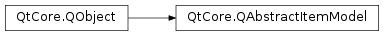
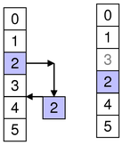

QAbstractItemModel¶
Inherited by: QAbstractTableModel, QAbstractListModel, QStringListModel, QAbstractProxyModel, QDirModel, QHelpContentModel, QHelpIndexModel, QSortFilterProxyModel, QFileSystemModel, QSqlQueryModel, QSqlTableModel, QSqlRelationalTableModel, QStandardItemModel, QIdentityProxyModel
Synopsis¶
Functions¶
- def
beginInsertColumns(parent, first, last) - def
beginInsertRows(parent, first, last) - def
beginMoveColumns(sourceParent, sourceFirst, sourceLast, destinationParent, destinationColumn) - def
beginMoveRows(sourceParent, sourceFirst, sourceLast, destinationParent, destinationRow) - def
beginRemoveColumns(parent, first, last) - def
beginRemoveRows(parent, first, last) - def
beginResetModel() - def
changePersistentIndex(from, to) - def
changePersistentIndexList(from, to) - def
checkIndex(index[, options=CheckIndexOption.NoOption]) - def
createIndex(row, column, ptr) - def
createIndex(row, column[, id=0]) - def
decodeData(row, column, parent, stream) - def
encodeData(indexes, stream) - def
endInsertColumns() - def
endInsertRows() - def
endMoveColumns() - def
endMoveRows() - def
endRemoveColumns() - def
endRemoveRows() - def
endResetModel() - def
hasIndex(row, column[, parent=QModelIndex()]) - def
insertColumn(column[, parent=QModelIndex()]) - def
insertRow(row[, parent=QModelIndex()]) - def
moveColumn(sourceParent, sourceColumn, destinationParent, destinationChild) - def
moveRow(sourceParent, sourceRow, destinationParent, destinationChild) - def
persistentIndexList() - def
removeColumn(column[, parent=QModelIndex()]) - def
removeRow(row[, parent=QModelIndex()])
Virtual functions¶
- def
buddy(index) - def
canDropMimeData(data, action, row, column, parent) - def
canFetchMore(parent) - def
columnCount([parent=QModelIndex()]) - def
data(index[, role=Qt.DisplayRole]) - def
dropMimeData(data, action, row, column, parent) - def
fetchMore(parent) - def
flags(index) - def
hasChildren([parent=QModelIndex()]) - def
headerData(section, orientation[, role=Qt.DisplayRole]) - def
index(row, column[, parent=QModelIndex()]) - def
insertColumns(column, count[, parent=QModelIndex()]) - def
insertRows(row, count[, parent=QModelIndex()]) - def
itemData(index) - def
match(start, role, value[, hits=1[, flags=Qt.MatchFlags(Qt.MatchStartsWith|Qt.MatchWrap)]]) - def
mimeData(indexes) - def
mimeTypes() - def
moveColumns(sourceParent, sourceColumn, count, destinationParent, destinationChild) - def
moveRows(sourceParent, sourceRow, count, destinationParent, destinationChild) - def
parent(child) - def
removeColumns(column, count[, parent=QModelIndex()]) - def
removeRows(row, count[, parent=QModelIndex()]) - def
revert() - def
roleNames() - def
rowCount([parent=QModelIndex()]) - def
setData(index, value[, role=Qt.EditRole]) - def
setHeaderData(section, orientation, value[, role=Qt.EditRole]) - def
setItemData(index, roles) - def
sibling(row, column, idx) - def
sort(column[, order=Qt.AscendingOrder]) - def
span(index) - def
submit() - def
supportedDragActions() - def
supportedDropActions()
Slots¶
- def
resetInternalData()
Signals¶
- def
dataChanged(topLeft, bottomRight[, roles=list()]) - def
headerDataChanged(orientation, first, last) - def
layoutAboutToBeChanged([parents=list()[, hint=QAbstractItemModel.NoLayoutChangeHint]]) - def
layoutChanged([parents=list()[, hint=QAbstractItemModel.NoLayoutChangeHint]])
Detailed Description¶
The
PySide2.QtCore.QAbstractItemModelclass provides the abstract interface for item model classes.The
PySide2.QtCore.QAbstractItemModelclass defines the standard interface that item models must use to be able to interoperate with other components in the model/view architecture. It is not supposed to be instantiated directly. Instead, you should subclass it to create new models.The
PySide2.QtCore.QAbstractItemModelclass is one of the Model/View Classes and is part of Qt’s model/view framework . It can be used as the underlying data model for the item view elements in QML or the item view classes in the Qt Widgets module.If you need a model to use with an item view such as QML’s List View element or the C++ widgets
PySide2.QtWidgets.QListVieworPySide2.QtWidgets.QTableView, you should consider subclassingPySide2.QtCore.QAbstractListModelorPySide2.QtCore.QAbstractTableModelinstead of this class.The underlying data model is exposed to views and delegates as a hierarchy of tables. If you do not make use of the hierarchy, then the model is a simple table of rows and columns. Each item has a unique index specified by a
PySide2.QtCore.QModelIndex.
Every item of data that can be accessed via a model has an associated model index. You can obtain this model index using the
PySide2.QtCore.QAbstractItemModel.index()function. Each index may have aPySide2.QtCore.QAbstractItemModel.sibling()index; child items have aPySide2.QtCore.QAbstractItemModel.parent()index.Each item has a number of data elements associated with it and they can be retrieved by specifying a role (see
Qt.ItemDataRole) to the model’sPySide2.QtCore.QAbstractItemModel.data()function. Data for all available roles can be obtained at the same time using thePySide2.QtCore.QAbstractItemModel.itemData()function.Data for each role is set using a particular
Qt.ItemDataRole. Data for individual roles are set individually withPySide2.QtCore.QAbstractItemModel.setData(), or they can be set for all roles withPySide2.QtCore.QAbstractItemModel.setItemData().Items can be queried with
PySide2.QtCore.QAbstractItemModel.flags()(seeQt.ItemFlag) to see if they can be selected, dragged, or manipulated in other ways.If an item has child objects,
PySide2.QtCore.QAbstractItemModel.hasChildren()returnstruefor the corresponding index.The model has a
PySide2.QtCore.QAbstractItemModel.rowCount()and aPySide2.QtCore.QAbstractItemModel.columnCount()for each level of the hierarchy. Rows and columns can be inserted and removed withPySide2.QtCore.QAbstractItemModel.insertRows(),PySide2.QtCore.QAbstractItemModel.insertColumns(),PySide2.QtCore.QAbstractItemModel.removeRows(), andPySide2.QtCore.QAbstractItemModel.removeColumns().The model emits signals to indicate changes. For example,
PySide2.QtCore.QAbstractItemModel.dataChanged()is emitted whenever items of data made available by the model are changed. Changes to the headers supplied by the model causePySide2.QtCore.QAbstractItemModel.headerDataChanged()to be emitted. If the structure of the underlying data changes, the model can emitPySide2.QtCore.QAbstractItemModel.layoutChanged()to indicate to any attached views that they should redisplay any items shown, taking the new structure into account.The items available through the model can be searched for particular data using the
PySide2.QtCore.QAbstractItemModel.match()function.To sort the model, you can use
PySide2.QtCore.QAbstractItemModel.sort().
Subclassing¶
Note
Some general guidelines for subclassing models are available in the Model Subclassing Reference .
When subclassing
PySide2.QtCore.QAbstractItemModel, at the very least you must implementPySide2.QtCore.QAbstractItemModel.index(),PySide2.QtCore.QAbstractItemModel.parent(),PySide2.QtCore.QAbstractItemModel.rowCount(),PySide2.QtCore.QAbstractItemModel.columnCount(), andPySide2.QtCore.QAbstractItemModel.data(). These functions are used in all read-only models, and form the basis of editable models.You can also reimplement
PySide2.QtCore.QAbstractItemModel.hasChildren()to provide special behavior for models where the implementation ofPySide2.QtCore.QAbstractItemModel.rowCount()is expensive. This makes it possible for models to restrict the amount of data requested by views, and can be used as a way to implement lazy population of model data.To enable editing in your model, you must also implement
PySide2.QtCore.QAbstractItemModel.setData(), and reimplementPySide2.QtCore.QAbstractItemModel.flags()to ensure thatItemIsEditableis returned. You can also reimplementPySide2.QtCore.QAbstractItemModel.headerData()andPySide2.QtCore.QAbstractItemModel.setHeaderData()to control the way the headers for your model are presented.The
PySide2.QtCore.QAbstractItemModel.dataChanged()andPySide2.QtCore.QAbstractItemModel.headerDataChanged()signals must be emitted explicitly when reimplementing thePySide2.QtCore.QAbstractItemModel.setData()andPySide2.QtCore.QAbstractItemModel.setHeaderData()functions, respectively.Custom models need to create model indexes for other components to use. To do this, call
PySide2.QtCore.QAbstractItemModel.createIndex()with suitable row and column numbers for the item, and an identifier for it, either as a pointer or as an integer value. The combination of these values must be unique for each item. Custom models typically use these unique identifiers in other reimplemented functions to retrieve item data and access information about the item’s parents and children. See the Simple Tree Model Example for more information about unique identifiers.It is not necessary to support every role defined in
Qt.ItemDataRole. Depending on the type of data contained within a model, it may only be useful to implement thePySide2.QtCore.QAbstractItemModel.data()function to return valid information for some of the more common roles. Most models provide at least a textual representation of item data for theQt.DisplayRole, and well-behaved models should also provide valid information for theQt.ToolTipRoleandQt.WhatsThisRole. Supporting these roles enables models to be used with standard Qt views. However, for some models that handle highly-specialized data, it may be appropriate to provide data only for user-defined roles.Models that provide interfaces to resizable data structures can provide implementations of
PySide2.QtCore.QAbstractItemModel.insertRows(),PySide2.QtCore.QAbstractItemModel.removeRows(),PySide2.QtCore.QAbstractItemModel.insertColumns(),andPySide2.QtCore.QAbstractItemModel.removeColumns(). When implementing these functions, it is important to notify any connected views about changes to the model’s dimensions both before and after they occur:
- An
PySide2.QtCore.QAbstractItemModel.insertRows()implementation must callPySide2.QtCore.QAbstractItemModel.beginInsertRows()before inserting new rows into the data structure, andPySide2.QtCore.QAbstractItemModel.endInsertRows()immediately afterwards.- An
PySide2.QtCore.QAbstractItemModel.insertColumns()implementation must callPySide2.QtCore.QAbstractItemModel.beginInsertColumns()before inserting new columns into the data structure, andPySide2.QtCore.QAbstractItemModel.endInsertColumns()immediately afterwards.- A
PySide2.QtCore.QAbstractItemModel.removeRows()implementation must callPySide2.QtCore.QAbstractItemModel.beginRemoveRows()before the rows are removed from the data structure, andPySide2.QtCore.QAbstractItemModel.endRemoveRows()immediately afterwards.- A
PySide2.QtCore.QAbstractItemModel.removeColumns()implementation must callPySide2.QtCore.QAbstractItemModel.beginRemoveColumns()before the columns are removed from the data structure, andPySide2.QtCore.QAbstractItemModel.endRemoveColumns()immediately afterwards.The private signals that these functions emit give attached components the chance to take action before any data becomes unavailable. The encapsulation of the insert and remove operations with these begin and end functions also enables the model to manage
persistent model indexescorrectly. If you want selections to be handled properly, you must ensure that you call these functions. If you insert or remove an item with children, you do not need to call these functions for the child items. In other words, the parent item will take care of its child items.To create models that populate incrementally, you can reimplement
PySide2.QtCore.QAbstractItemModel.fetchMore()andPySide2.QtCore.QAbstractItemModel.canFetchMore(). If the reimplementation ofPySide2.QtCore.QAbstractItemModel.fetchMore()adds rows to the model,PySide2.QtCore.QAbstractItemModel.beginInsertRows()andPySide2.QtCore.QAbstractItemModel.endInsertRows()must be called.
-
class
PySide2.QtCore.QAbstractItemModel([parent=nullptr])¶ Parameters: parent – PySide2.QtCore.QObjectConstructs an abstract item model with the given
parent.
-
PySide2.QtCore.QAbstractItemModel.LayoutChangeHint¶ This enum describes the way the model changes layout.
Constant Description QAbstractItemModel.NoLayoutChangeHint No hint is available. QAbstractItemModel.VerticalSortHint Rows are being sorted. QAbstractItemModel.HorizontalSortHint Columns are being sorted. Note that and carry the meaning that items are being moved within the same parent, not moved to a different parent in the model, and not filtered out or in.
-
PySide2.QtCore.QAbstractItemModel.CheckIndexOption¶ This enum can be used to control the checks performed by
QAbstractItemModel.checkIndex().Constant Description QAbstractItemModel.NoOption No check options are specified. QAbstractItemModel.IndexIsValid The model index passed to QAbstractItemModel.checkIndex()is checked to be a valid model index.QAbstractItemModel.DoNotUseParent Does not perform any check involving the usage of the parent of the index passed to QAbstractItemModel.checkIndex().QAbstractItemModel.ParentIsInvalid The parent of the model index passed to QAbstractItemModel.checkIndex()is checked to be an invalid model index. If both this option and are specified, then this option is ignored.
Note
This enum was introduced in Qt 5.11.
-
PySide2.QtCore.QAbstractItemModel.beginInsertColumns(parent, first, last)¶ Parameters: - parent –
PySide2.QtCore.QModelIndex - first –
PySide2.QtCore.int - last –
PySide2.QtCore.int
Begins a column insertion operation.
When reimplementing
PySide2.QtCore.QAbstractItemModel.insertColumns()in a subclass, you must call this function before inserting data into the model’s underlying data store.The
parentindex corresponds to the parent into which the new columns are inserted;firstandlastare the column numbers of the new columns will have after they have been inserted.
Specify the first and last column numbers for the span of columns you want to insert into an item in a model.
For example, as shown in the diagram, we insert three columns before column 4, so
firstis 4 andlastis 6:beginInsertColumns(parent, 4, 6)
This inserts the three new columns as columns 4, 5, and 6.

To append columns, insert them after the last column.
For example, as shown in the diagram, we append three columns to a collection of six existing columns (ending in column 5), so
firstis 6 andlastis 8:beginInsertColumns(parent, 6, 8)
This appends the two new columns as columns 6, 7, and 8.
Note
This function emits the
columnsAboutToBeInserted()signal which connected views (or proxies) must handle before the data is inserted. Otherwise, the views may end up in an invalid state.- parent –
-
PySide2.QtCore.QAbstractItemModel.beginInsertRows(parent, first, last)¶ Parameters: - parent –
PySide2.QtCore.QModelIndex - first –
PySide2.QtCore.int - last –
PySide2.QtCore.int
Begins a row insertion operation.
When reimplementing
PySide2.QtCore.QAbstractItemModel.insertRows()in a subclass, you must call this function before inserting data into the model’s underlying data store.The
parentindex corresponds to the parent into which the new rows are inserted;firstandlastare the row numbers that the new rows will have after they have been inserted.
Specify the first and last row numbers for the span of rows you want to insert into an item in a model.
For example, as shown in the diagram, we insert three rows before row 2, so
firstis 2 andlastis 4:beginInsertRows(parent, 2, 4)
This inserts the three new rows as rows 2, 3, and 4.

To append rows, insert them after the last row.
For example, as shown in the diagram, we append two rows to a collection of 4 existing rows (ending in row 3), so
firstis 4 andlastis 5:beginInsertRows(parent, 4, 5)
This appends the two new rows as rows 4 and 5.
Note
This function emits the
rowsAboutToBeInserted()signal which connected views (or proxies) must handle before the data is inserted. Otherwise, the views may end up in an invalid state.- parent –
-
PySide2.QtCore.QAbstractItemModel.beginMoveColumns(sourceParent, sourceFirst, sourceLast, destinationParent, destinationColumn)¶ Parameters: - sourceParent –
PySide2.QtCore.QModelIndex - sourceFirst –
PySide2.QtCore.int - sourceLast –
PySide2.QtCore.int - destinationParent –
PySide2.QtCore.QModelIndex - destinationColumn –
PySide2.QtCore.int
Return type: PySide2.QtCore.boolBegins a column move operation.
When reimplementing a subclass, this method simplifies moving entities in your model. This method is responsible for moving persistent indexes in the model, which you would otherwise be required to do yourself. Using and
PySide2.QtCore.QAbstractItemModel.endMoveColumns()is an alternative to emittingPySide2.QtCore.QAbstractItemModel.layoutAboutToBeChanged()andPySide2.QtCore.QAbstractItemModel.layoutChanged()directly along withPySide2.QtCore.QAbstractItemModel.changePersistentIndex().The
sourceParentindex corresponds to the parent from which the columns are moved;sourceFirstandsourceLastare the first and last column numbers of the columns to be moved. ThedestinationParentindex corresponds to the parent into which those columns are moved. ThedestinationChildis the column to which the columns will be moved. That is, the index at columnsourceFirstinsourceParentwill become columndestinationChildindestinationParent, followed by all other columns up tosourceLast.However, when moving columns down in the same parent (
sourceParentanddestinationParentare equal), the columns will be placed before thedestinationChildindex. That is, if you wish to move columns 0 and 1 so they will become columns 1 and 2,destinationChildshould be 3. In this case, the new index for the source columni(which is betweensourceFirstandsourceLast) is equal to(destinationChild-sourceLast-1+i).Note that if
sourceParentanddestinationParentare the same, you must ensure that thedestinationChildis not within the range ofsourceFirstandsourceLast+ 1. You must also ensure that you do not attempt to move a column to one of its own children or ancestors. This method returnsfalseif either condition is true, in which case you should abort your move operation.- sourceParent –
-
PySide2.QtCore.QAbstractItemModel.beginMoveRows(sourceParent, sourceFirst, sourceLast, destinationParent, destinationRow)¶ Parameters: - sourceParent –
PySide2.QtCore.QModelIndex - sourceFirst –
PySide2.QtCore.int - sourceLast –
PySide2.QtCore.int - destinationParent –
PySide2.QtCore.QModelIndex - destinationRow –
PySide2.QtCore.int
Return type: PySide2.QtCore.boolBegins a row move operation.
When reimplementing a subclass, this method simplifies moving entities in your model. This method is responsible for moving persistent indexes in the model, which you would otherwise be required to do yourself. Using and
PySide2.QtCore.QAbstractItemModel.endMoveRows()is an alternative to emittingPySide2.QtCore.QAbstractItemModel.layoutAboutToBeChanged()andPySide2.QtCore.QAbstractItemModel.layoutChanged()directly along withPySide2.QtCore.QAbstractItemModel.changePersistentIndex().The
sourceParentindex corresponds to the parent from which the rows are moved;sourceFirstandsourceLastare the first and last row numbers of the rows to be moved. ThedestinationParentindex corresponds to the parent into which those rows are moved. ThedestinationChildis the row to which the rows will be moved. That is, the index at rowsourceFirstinsourceParentwill become rowdestinationChildindestinationParent, followed by all other rows up tosourceLast.However, when moving rows down in the same parent (
sourceParentanddestinationParentare equal), the rows will be placed before thedestinationChildindex. That is, if you wish to move rows 0 and 1 so they will become rows 1 and 2,destinationChildshould be 3. In this case, the new index for the source rowi(which is betweensourceFirstandsourceLast) is equal to(destinationChild-sourceLast-1+i).Note that if
sourceParentanddestinationParentare the same, you must ensure that thedestinationChildis not within the range ofsourceFirstandsourceLast+ 1. You must also ensure that you do not attempt to move a row to one of its own children or ancestors. This method returnsfalseif either condition is true, in which case you should abort your move operation.
Specify the first and last row numbers for the span of rows in the source parent you want to move in the model. Also specify the row in the destination parent to move the span to.
For example, as shown in the diagram, we move three rows from row 2 to 4 in the source, so
sourceFirstis 2 andsourceLastis 4. We move those items to above row 2 in the destination, sodestinationChildis 2.beginMoveRows(sourceParent, 2, 4, destinationParent, 2)
This moves the three rows rows 2, 3, and 4 in the source to become 2, 3 and 4 in the destination. Other affected siblings are displaced accordingly.

To append rows to another parent, move them to after the last row.
For example, as shown in the diagram, we move three rows to a collection of 6 existing rows (ending in row 5), so
destinationChildis 6:beginMoveRows(sourceParent, 2, 4, destinationParent, 6)
This moves the target rows to the end of the target parent as 6, 7 and 8.

To move rows within the same parent, specify the row to move them to.
For example, as shown in the diagram, we move one item from row 2 to row 0, so
sourceFirstandsourceLastare 2 anddestinationChildis 0.beginMoveRows(parent, 2, 2, parent, 0)
Note that other rows may be displaced accordingly. Note also that when moving items within the same parent you should not attempt invalid or no-op moves. In the above example, item 2 is at row 2 before the move, so it can not be moved to row 2 (where it is already) or row 3 (no-op as row 3 means above row 3, where it is already)
 To move rows within the same parent, specify the row to move them to.
For example, as shown in the diagram, we move one item from row 2 to row 4, so
sourceFirstandsourceLastare 2 anddestinationChildis 4.beginMoveRows(parent, 2, 2, parent, 4)
Note that other rows may be displaced accordingly.
- sourceParent –
-
PySide2.QtCore.QAbstractItemModel.beginRemoveColumns(parent, first, last)¶ Parameters: - parent –
PySide2.QtCore.QModelIndex - first –
PySide2.QtCore.int - last –
PySide2.QtCore.int
Begins a column removal operation.
When reimplementing
PySide2.QtCore.QAbstractItemModel.removeColumns()in a subclass, you must call this function before removing data from the model’s underlying data store.The
parentindex corresponds to the parent from which the new columns are removed;firstandlastare the column numbers of the first and last columns to be removed.
Specify the first and last column numbers for the span of columns you want to remove from an item in a model.
For example, as shown in the diagram, we remove the three columns from column 4 to column 6, so
firstis 4 andlastis 6:beginRemoveColumns(parent, 4, 6)
Note
This function emits the
columnsAboutToBeRemoved()signal which connected views (or proxies) must handle before the data is removed. Otherwise, the views may end up in an invalid state.- parent –
-
PySide2.QtCore.QAbstractItemModel.beginRemoveRows(parent, first, last)¶ Parameters: - parent –
PySide2.QtCore.QModelIndex - first –
PySide2.QtCore.int - last –
PySide2.QtCore.int
Begins a row removal operation.
When reimplementing
PySide2.QtCore.QAbstractItemModel.removeRows()in a subclass, you must call this function before removing data from the model’s underlying data store.The
parentindex corresponds to the parent from which the new rows are removed;firstandlastare the row numbers of the rows to be removed.
Specify the first and last row numbers for the span of rows you want to remove from an item in a model.
For example, as shown in the diagram, we remove the two rows from row 2 to row 3, so
firstis 2 andlastis 3:beginRemoveRows(parent, 2, 3)
Note
This function emits the
rowsAboutToBeRemoved()signal which connected views (or proxies) must handle before the data is removed. Otherwise, the views may end up in an invalid state.- parent –
-
PySide2.QtCore.QAbstractItemModel.beginResetModel()¶ Begins a model reset operation.
A reset operation resets the model to its current state in any attached views.
Note
Any views attached to this model will be reset as well.
When a model is reset it means that any previous data reported from the model is now invalid and has to be queried for again. This also means that the current item and any selected items will become invalid.
When a model radically changes its data it can sometimes be easier to just call this function rather than emit
PySide2.QtCore.QAbstractItemModel.dataChanged()to inform other components when the underlying data source, or its structure, has changed.You must call this function before resetting any internal data structures in your model or proxy model.
This function emits the signal
modelAboutToBeReset().See also
modelAboutToBeReset()modelReset()PySide2.QtCore.QAbstractItemModel.endResetModel()
-
PySide2.QtCore.QAbstractItemModel.buddy(index)¶ Parameters: index – PySide2.QtCore.QModelIndexReturn type: PySide2.QtCore.QModelIndexReturns a model index for the buddy of the item represented by
index. When the user wants to edit an item, the view will call this function to check whether another item in the model should be edited instead. Then, the view will construct a delegate using the model index returned by the buddy item.The default implementation of this function has each item as its own buddy.
-
PySide2.QtCore.QAbstractItemModel.canDropMimeData(data, action, row, column, parent)¶ Parameters: - data –
PySide2.QtCore.QMimeData - action –
PySide2.QtCore.Qt.DropAction - row –
PySide2.QtCore.int - column –
PySide2.QtCore.int - parent –
PySide2.QtCore.QModelIndex
Return type: PySide2.QtCore.boolReturns
trueif a model can accept a drop of thedata. This default implementation only checks ifdatahas at least one format in the list ofPySide2.QtCore.QAbstractItemModel.mimeTypes()and ifactionis among the model’sPySide2.QtCore.QAbstractItemModel.supportedDropActions().Reimplement this function in your custom model, if you want to test whether the
datacan be dropped atrow,column,parentwithaction. If you don’t need that test, it is not necessary to reimplement this function.- data –
-
PySide2.QtCore.QAbstractItemModel.canFetchMore(parent)¶ Parameters: parent – PySide2.QtCore.QModelIndexReturn type: PySide2.QtCore.boolReturns
trueif there is more data available forparent; otherwise returnsfalse.The default implementation always returns
false.If returns
true, thePySide2.QtCore.QAbstractItemModel.fetchMore()function should be called. This is the behavior ofPySide2.QtWidgets.QAbstractItemView, for example.
-
PySide2.QtCore.QAbstractItemModel.changePersistentIndex(from, to)¶ Parameters: - from –
PySide2.QtCore.QModelIndex - to –
PySide2.QtCore.QModelIndex
Changes the
PySide2.QtCore.QPersistentModelIndexthat is equal to the givenfrommodel index to the giventomodel index.If no persistent model index equal to the given
frommodel index was found, nothing is changed.- from –
-
PySide2.QtCore.QAbstractItemModel.changePersistentIndexList(from, to)¶ Parameters: - from –
PySide2.QtCore.QModelIndexList - to –
PySide2.QtCore.QModelIndexList
Changes the {
PySide2.QtCore.QPersistentModelIndex}es that are equal to the indexes in the givenfrommodel index list to the giventomodel index list.If no persistent model indexes equal to the indexes in the given
frommodel index list are found, nothing is changed.- from –
-
PySide2.QtCore.QAbstractItemModel.checkIndex(index[, options=CheckIndexOption.NoOption])¶ Parameters: - index –
PySide2.QtCore.QModelIndex - options –
PySide2.QtCore.QAbstractItemModel.CheckIndexOptions
Return type: PySide2.QtCore.boolThis function checks whether
indexis a legal model index for this model. A legal model index is either an invalid model index, or a valid model index for which all the following holds:- the index’ model is
this; - the index’ row is greater or equal than zero;
- the index’ row is less than the row count for the index’ parent;
- the index’ column is greater or equal than zero;
- the index’ column is less than the column count for the index’ parent.
The
optionsargument may change some of these checks. IfoptionscontainsIndexIsValid, thenindexmust be a valid index; this is useful when reimplementing functions such asPySide2.QtCore.QAbstractItemModel.data()orPySide2.QtCore.QAbstractItemModel.setData(), which expect valid indexes.If
optionscontainsDoNotUseParent, then the checks that would callPySide2.QtCore.QAbstractItemModel.parent()are omitted; this allows calling this function from aPySide2.QtCore.QAbstractItemModel.parent()reimplementation (otherwise, this would result in endless recursion and a crash).If
optionsdoes not containDoNotUseParent, and it containsParentIsInvalid, then an additional check is performed: the parent index is checked for not being valid. This is useful when implementing flat models such as lists or tables, where no model index should have a valid parent index.This function returns true if all the checks succeeded, and false otherwise. This allows to use the function in
Q_ASSERT()and similar other debugging mechanisms. If some check failed, a warning message will be printed in theqt.core.qabstractitemmodel.checkindexlogging category, containing some information that may be useful for debugging the failure.Note
This function is a debugging helper for implementing your own item models. When developing complex models, as well as when building complicated model hierarchies (e.g. using proxy models), it is useful to call this function in order to catch bugs relative to illegal model indices (as defined above) accidentally passed to some
PySide2.QtCore.QAbstractItemModelAPI.Warning
Note that it’s undefined behavior to pass illegal indices to item models, so applications must refrain from doing so, and not rely on any “defensive” programming that item models could employ to handle illegal indexes gracefully.
See also
- index –
-
PySide2.QtCore.QAbstractItemModel.columnCount([parent=QModelIndex()])¶ Parameters: parent – PySide2.QtCore.QModelIndexReturn type: PySide2.QtCore.intReturns the number of columns for the children of the given
parent.In most subclasses, the number of columns is independent of the
parent.For example:
int DomModel::columnCount(const QModelIndex &/*parent*/) const { return 3; }
Note
When implementing a table based model, should return 0 when the parent is valid.
-
PySide2.QtCore.QAbstractItemModel.createIndex(row, column, ptr)¶ Parameters: - row –
PySide2.QtCore.int - column –
PySide2.QtCore.int - ptr –
PyObject
Return type: - Creates a model index for the given row and column with the internal pointer ptr.
When using a QSortFilterProxyModel, its indexes have their own internal pointer. It is not advisable to access this internal pointer outside of the model. Use the data() function instead. This function provides a consistent interface that model subclasses must use to create model indexes.
Warning
Because of some Qt/Python itegration rules, the ptr argument do not get the reference incremented during the QModelIndex life time. So it is necessary to keep the object used on ptr argument alive during the whole process. Do not destroy the object if you are not sure about that.
- row –
-
PySide2.QtCore.QAbstractItemModel.createIndex(row, column[, id=0]) Parameters: - row –
PySide2.QtCore.int - column –
PySide2.QtCore.int - id –
PySide2.QtCore.quintptr
Return type: Creates a model index for the given
rowandcolumnwith the internal identifier,id.This function provides a consistent interface that model subclasses must use to create model indexes.
See also
- row –
-
PySide2.QtCore.QAbstractItemModel.data(index[, role=Qt.DisplayRole])¶ Parameters: - index –
PySide2.QtCore.QModelIndex - role –
PySide2.QtCore.int
Return type: Returns the data stored under the given
rolefor the item referred to by theindex.Note
If you do not have a value to return, return an invalid
PySide2.QtCore.QVariantinstead of returning 0.See also
Qt.ItemDataRolePySide2.QtCore.QAbstractItemModel.setData()PySide2.QtCore.QAbstractItemModel.headerData()- index –
-
PySide2.QtCore.QAbstractItemModel.dataChanged(topLeft, bottomRight[, roles=list()])¶ Parameters: - topLeft –
PySide2.QtCore.QModelIndex - bottomRight –
PySide2.QtCore.QModelIndex - roles –
- topLeft –
-
PySide2.QtCore.QAbstractItemModel.decodeData(row, column, parent, stream)¶ Parameters: - row –
PySide2.QtCore.int - column –
PySide2.QtCore.int - parent –
PySide2.QtCore.QModelIndex - stream –
PySide2.QtCore.QDataStream
Return type: PySide2.QtCore.bool- row –
-
PySide2.QtCore.QAbstractItemModel.dropMimeData(data, action, row, column, parent)¶ Parameters: - data –
PySide2.QtCore.QMimeData - action –
PySide2.QtCore.Qt.DropAction - row –
PySide2.QtCore.int - column –
PySide2.QtCore.int - parent –
PySide2.QtCore.QModelIndex
Return type: PySide2.QtCore.boolHandles the
datasupplied by a drag and drop operation that ended with the givenaction.Returns
trueif the data and action were handled by the model; otherwise returnsfalse.The specified
row,columnandparentindicate the location of an item in the model where the operation ended. It is the responsibility of the model to complete the action at the correct location.For instance, a drop action on an item in a
PySide2.QtWidgets.QTreeViewcan result in new items either being inserted as children of the item specified byrow,column, andparent, or as siblings of the item.When
rowandcolumnare -1 it means that the dropped data should be considered as dropped directly onparent. Usually this will mean appending the data as child items ofparent. Ifrowandcolumnare greater than or equal zero, it means that the drop occurred just before the specifiedrowandcolumnin the specifiedparent.The
PySide2.QtCore.QAbstractItemModel.mimeTypes()member is called to get the list of acceptable MIME types. This default implementation assumes the default implementation ofPySide2.QtCore.QAbstractItemModel.mimeTypes(), which returns a single default MIME type. If you reimplementPySide2.QtCore.QAbstractItemModel.mimeTypes()in your custom model to return multiple MIME types, you must reimplement this function to make use of them.- data –
-
PySide2.QtCore.QAbstractItemModel.encodeData(indexes, stream)¶ Parameters: - indexes –
PySide2.QtCore.QModelIndexList - stream –
PySide2.QtCore.QDataStream
- indexes –
-
PySide2.QtCore.QAbstractItemModel.endInsertColumns()¶ Ends a column insertion operation.
When reimplementing
PySide2.QtCore.QAbstractItemModel.insertColumns()in a subclass, you must call this function after inserting data into the model’s underlying data store.
-
PySide2.QtCore.QAbstractItemModel.endInsertRows()¶ Ends a row insertion operation.
When reimplementing
PySide2.QtCore.QAbstractItemModel.insertRows()in a subclass, you must call this function after inserting data into the model’s underlying data store.
-
PySide2.QtCore.QAbstractItemModel.endMoveColumns()¶ Ends a column move operation.
When implementing a subclass, you must call this function after moving data within the model’s underlying data store.
-
PySide2.QtCore.QAbstractItemModel.endMoveRows()¶ Ends a row move operation.
When implementing a subclass, you must call this function after moving data within the model’s underlying data store.
-
PySide2.QtCore.QAbstractItemModel.endRemoveColumns()¶ Ends a column removal operation.
When reimplementing
PySide2.QtCore.QAbstractItemModel.removeColumns()in a subclass, you must call this function after removing data from the model’s underlying data store.
-
PySide2.QtCore.QAbstractItemModel.endRemoveRows()¶ Ends a row removal operation.
When reimplementing
PySide2.QtCore.QAbstractItemModel.removeRows()in a subclass, you must call this function after removing data from the model’s underlying data store.
-
PySide2.QtCore.QAbstractItemModel.endResetModel()¶ Completes a model reset operation.
You must call this function after resetting any internal data structure in your model or proxy model.
This function emits the signal
modelReset().
-
PySide2.QtCore.QAbstractItemModel.fetchMore(parent)¶ Parameters: parent – PySide2.QtCore.QModelIndexFetches any available data for the items with the parent specified by the
parentindex.Reimplement this if you are populating your model incrementally.
The default implementation does nothing.
-
PySide2.QtCore.QAbstractItemModel.flags(index)¶ Parameters: index – PySide2.QtCore.QModelIndexReturn type: PySide2.QtCore.Qt.ItemFlagsReturns the item flags for the given
index.The base class implementation returns a combination of flags that enables the item (
ItemIsEnabled) and allows it to be selected (ItemIsSelectable).See also
Qt.ItemFlags
-
PySide2.QtCore.QAbstractItemModel.hasChildren([parent=QModelIndex()])¶ Parameters: parent – PySide2.QtCore.QModelIndexReturn type: PySide2.QtCore.boolReturns
trueifparenthas any children; otherwise returnsfalse.Use
PySide2.QtCore.QAbstractItemModel.rowCount()on the parent to find out the number of children.Note that it is undefined behavior to report that a particular index with this method if the same index has the flag
Qt.ItemNeverHasChildrenset.
-
PySide2.QtCore.QAbstractItemModel.hasIndex(row, column[, parent=QModelIndex()])¶ Parameters: - row –
PySide2.QtCore.int - column –
PySide2.QtCore.int - parent –
PySide2.QtCore.QModelIndex
Return type: PySide2.QtCore.boolReturns
trueif the model returns a validPySide2.QtCore.QModelIndexforrowandcolumnwithparent, otherwise returnsfalse.- row –
-
PySide2.QtCore.QAbstractItemModel.headerData(section, orientation[, role=Qt.DisplayRole])¶ Parameters: - section –
PySide2.QtCore.int - orientation –
PySide2.QtCore.Qt.Orientation - role –
PySide2.QtCore.int
Return type: Returns the data for the given
roleandsectionin the header with the specifiedorientation.For horizontal headers, the section number corresponds to the column number. Similarly, for vertical headers, the section number corresponds to the row number.
See also
Qt.ItemDataRolePySide2.QtCore.QAbstractItemModel.setHeaderData()PySide2.QtWidgets.QHeaderView- section –
-
PySide2.QtCore.QAbstractItemModel.headerDataChanged(orientation, first, last)¶ Parameters: - orientation –
PySide2.QtCore.Qt.Orientation - first –
PySide2.QtCore.int - last –
PySide2.QtCore.int
- orientation –
-
PySide2.QtCore.QAbstractItemModel.index(row, column[, parent=QModelIndex()])¶ Parameters: - row –
PySide2.QtCore.int - column –
PySide2.QtCore.int - parent –
PySide2.QtCore.QModelIndex
Return type: Returns the index of the item in the model specified by the given
row,columnandparentindex.When reimplementing this function in a subclass, call
PySide2.QtCore.QAbstractItemModel.createIndex()to generate model indexes that other components can use to refer to items in your model.- row –
-
PySide2.QtCore.QAbstractItemModel.insertColumn(column[, parent=QModelIndex()])¶ Parameters: - column –
PySide2.QtCore.int - parent –
PySide2.QtCore.QModelIndex
Return type: PySide2.QtCore.boolInserts a single column before the given
columnin the child items of theparentspecified.Returns
trueif the column is inserted; otherwise returnsfalse.- column –
-
PySide2.QtCore.QAbstractItemModel.insertColumns(column, count[, parent=QModelIndex()])¶ Parameters: - column –
PySide2.QtCore.int - count –
PySide2.QtCore.int - parent –
PySide2.QtCore.QModelIndex
Return type: PySide2.QtCore.boolOn models that support this, inserts
countnew columns into the model before the givencolumn. The items in each new column will be children of the item represented by theparentmodel index.If
columnis 0, the columns are prepended to any existing columns.If
columnisPySide2.QtCore.QAbstractItemModel.columnCount(), the columns are appended to any existing columns.If
parenthas no children, a single row withcountcolumns is inserted.Returns
trueif the columns were successfully inserted; otherwise returnsfalse.The base class implementation does nothing and returns
false.If you implement your own model, you can reimplement this function if you want to support insertions. Alternatively, you can provide your own API for altering the data.
- column –
-
PySide2.QtCore.QAbstractItemModel.insertRow(row[, parent=QModelIndex()])¶ Parameters: - row –
PySide2.QtCore.int - parent –
PySide2.QtCore.QModelIndex
Return type: PySide2.QtCore.boolInserts a single row before the given
rowin the child items of theparentspecified.Note
This function calls the virtual method
PySide2.QtCore.QAbstractItemModel.insertRows().Returns
trueif the row is inserted; otherwise returnsfalse.- row –
-
PySide2.QtCore.QAbstractItemModel.insertRows(row, count[, parent=QModelIndex()])¶ Parameters: - row –
PySide2.QtCore.int - count –
PySide2.QtCore.int - parent –
PySide2.QtCore.QModelIndex
Return type: PySide2.QtCore.boolNote
The base class implementation of this function does nothing and returns
false.On models that support this, inserts
countrows into the model before the givenrow. Items in the new row will be children of the item represented by theparentmodel index.If
rowis 0, the rows are prepended to any existing rows in the parent.If
rowisPySide2.QtCore.QAbstractItemModel.rowCount(), the rows are appended to any existing rows in the parent.If
parenthas no children, a single column withcountrows is inserted.Returns
trueif the rows were successfully inserted; otherwise returnsfalse.If you implement your own model, you can reimplement this function if you want to support insertions. Alternatively, you can provide your own API for altering the data. In either case, you will need to call
PySide2.QtCore.QAbstractItemModel.beginInsertRows()andPySide2.QtCore.QAbstractItemModel.endInsertRows()to notify other components that the model has changed.- row –
-
PySide2.QtCore.QAbstractItemModel.itemData(index)¶ Parameters: index – PySide2.QtCore.QModelIndexReturn type: Returns a map with values for all predefined roles in the model for the item at the given
index.Reimplement this function if you want to extend the default behavior of this function to include custom roles in the map.
See also
PySide2.QtCore.QAbstractItemModel.setItemData()Qt.ItemDataRolePySide2.QtCore.QAbstractItemModel.data()
-
PySide2.QtCore.QAbstractItemModel.layoutAboutToBeChanged([parents=list()[, hint=QAbstractItemModel.NoLayoutChangeHint]])¶ Parameters: - parents –
- hint –
PySide2.QtCore.QAbstractItemModel.LayoutChangeHint
-
PySide2.QtCore.QAbstractItemModel.layoutChanged([parents=list()[, hint=QAbstractItemModel.NoLayoutChangeHint]])¶ Parameters: - parents –
- hint –
PySide2.QtCore.QAbstractItemModel.LayoutChangeHint
-
PySide2.QtCore.QAbstractItemModel.match(start, role, value[, hits=1[, flags=Qt.MatchFlags(Qt.MatchStartsWith|Qt.MatchWrap)]])¶ Parameters: - start –
PySide2.QtCore.QModelIndex - role –
PySide2.QtCore.int - value – object
- hits –
PySide2.QtCore.int - flags –
PySide2.QtCore.Qt.MatchFlags
Return type: PySide2.QtCore.QModelIndexListReturns a list of indexes for the items in the column of the
startindex where data stored under the givenrolematches the specifiedvalue. The way the search is performed is defined by theflagsgiven. The list that is returned may be empty. Note also that the order of results in the list may not correspond to the order in the model, if for example a proxy model is used. The order of the results can not be relied upon.The search begins from the
startindex, and continues until the number of matching data items equalshits, the search reaches the last row, or the search reachesstartagain - depending on whetherMatchWrapis specified inflags. If you want to search for all matching items, usehits= -1.By default, this function will perform a wrapping, string-based comparison on all items, searching for items that begin with the search term specified by
value.Note
The default implementation of this function only searches columns. Reimplement this function to include a different search behavior.
- start –
-
PySide2.QtCore.QAbstractItemModel.mimeData(indexes)¶ Parameters: indexes – PySide2.QtCore.QModelIndexListReturn type: PySide2.QtCore.QMimeDataReturns an object that contains serialized items of data corresponding to the list of
indexesspecified. The format used to describe the encoded data is obtained from thePySide2.QtCore.QAbstractItemModel.mimeTypes()function. This default implementation uses the default MIME type returned by the default implementation ofPySide2.QtCore.QAbstractItemModel.mimeTypes(). If you reimplementPySide2.QtCore.QAbstractItemModel.mimeTypes()in your custom model to return more MIME types, reimplement this function to make use of them.If the list of
indexesis empty, or there are no supported MIME types, 0 is returned rather than a serialized empty list.
-
PySide2.QtCore.QAbstractItemModel.mimeTypes()¶ Return type: list of strings Returns the list of allowed MIME types. By default, the built-in models and views use an internal MIME type:
application/x-qabstractitemmodeldatalist.When implementing drag and drop support in a custom model, if you will return data in formats other than the default internal MIME type, reimplement this function to return your list of MIME types.
If you reimplement this function in your custom model, you must also reimplement the member functions that call it:
PySide2.QtCore.QAbstractItemModel.mimeData()andPySide2.QtCore.QAbstractItemModel.dropMimeData().
-
PySide2.QtCore.QAbstractItemModel.moveColumn(sourceParent, sourceColumn, destinationParent, destinationChild)¶ Parameters: - sourceParent –
PySide2.QtCore.QModelIndex - sourceColumn –
PySide2.QtCore.int - destinationParent –
PySide2.QtCore.QModelIndex - destinationChild –
PySide2.QtCore.int
Return type: PySide2.QtCore.boolOn models that support this, moves
sourceColumnfromsourceParenttodestinationChildunderdestinationParent.Returns
trueif the columns were successfully moved; otherwise returnsfalse.- sourceParent –
-
PySide2.QtCore.QAbstractItemModel.moveColumns(sourceParent, sourceColumn, count, destinationParent, destinationChild)¶ Parameters: - sourceParent –
PySide2.QtCore.QModelIndex - sourceColumn –
PySide2.QtCore.int - count –
PySide2.QtCore.int - destinationParent –
PySide2.QtCore.QModelIndex - destinationChild –
PySide2.QtCore.int
Return type: PySide2.QtCore.boolOn models that support this, moves
countcolumns starting with the givensourceColumnunder parentsourceParentto columndestinationChildunder parentdestinationParent.Returns
trueif the columns were successfully moved; otherwise returnsfalse.The base class implementation does nothing and returns
false.If you implement your own model, you can reimplement this function if you want to support moving. Alternatively, you can provide your own API for altering the data.
- sourceParent –
-
PySide2.QtCore.QAbstractItemModel.moveRow(sourceParent, sourceRow, destinationParent, destinationChild)¶ Parameters: - sourceParent –
PySide2.QtCore.QModelIndex - sourceRow –
PySide2.QtCore.int - destinationParent –
PySide2.QtCore.QModelIndex - destinationChild –
PySide2.QtCore.int
Return type: PySide2.QtCore.boolOn models that support this, moves
sourceRowfromsourceParenttodestinationChildunderdestinationParent.Returns
trueif the rows were successfully moved; otherwise returnsfalse.- sourceParent –
-
PySide2.QtCore.QAbstractItemModel.moveRows(sourceParent, sourceRow, count, destinationParent, destinationChild)¶ Parameters: - sourceParent –
PySide2.QtCore.QModelIndex - sourceRow –
PySide2.QtCore.int - count –
PySide2.QtCore.int - destinationParent –
PySide2.QtCore.QModelIndex - destinationChild –
PySide2.QtCore.int
Return type: PySide2.QtCore.boolOn models that support this, moves
countrows starting with the givensourceRowunder parentsourceParentto rowdestinationChildunder parentdestinationParent.Returns
trueif the rows were successfully moved; otherwise returnsfalse.The base class implementation does nothing and returns
false.If you implement your own model, you can reimplement this function if you want to support moving. Alternatively, you can provide your own API for altering the data.
- sourceParent –
-
PySide2.QtCore.QAbstractItemModel.parent(child)¶ Parameters: child – PySide2.QtCore.QModelIndexReturn type: PySide2.QtCore.QModelIndexReturns the parent of the model item with the given
index. If the item has no parent, an invalidPySide2.QtCore.QModelIndexis returned.A common convention used in models that expose tree data structures is that only items in the first column have children. For that case, when reimplementing this function in a subclass the column of the returned
PySide2.QtCore.QModelIndexwould be 0.When reimplementing this function in a subclass, be careful to avoid calling
PySide2.QtCore.QModelIndexmember functions, such asQModelIndex.parent(), since indexes belonging to your model will simply call your implementation, leading to infinite recursion.
-
PySide2.QtCore.QAbstractItemModel.persistentIndexList()¶ Return type: PySide2.QtCore.QModelIndexListReturns the list of indexes stored as persistent indexes in the model.
-
PySide2.QtCore.QAbstractItemModel.removeColumn(column[, parent=QModelIndex()])¶ Parameters: - column –
PySide2.QtCore.int - parent –
PySide2.QtCore.QModelIndex
Return type: PySide2.QtCore.boolRemoves the given
columnfrom the child items of theparentspecified.Returns
trueif the column is removed; otherwise returnsfalse.- column –
-
PySide2.QtCore.QAbstractItemModel.removeColumns(column, count[, parent=QModelIndex()])¶ Parameters: - column –
PySide2.QtCore.int - count –
PySide2.QtCore.int - parent –
PySide2.QtCore.QModelIndex
Return type: PySide2.QtCore.boolOn models that support this, removes
countcolumns starting with the givencolumnunder parentparentfrom the model.Returns
trueif the columns were successfully removed; otherwise returnsfalse.The base class implementation does nothing and returns
false.If you implement your own model, you can reimplement this function if you want to support removing. Alternatively, you can provide your own API for altering the data.
- column –
-
PySide2.QtCore.QAbstractItemModel.removeRow(row[, parent=QModelIndex()])¶ Parameters: - row –
PySide2.QtCore.int - parent –
PySide2.QtCore.QModelIndex
Return type: PySide2.QtCore.boolRemoves the given
rowfrom the child items of theparentspecified.Returns
trueif the row is removed; otherwise returnsfalse.This is a convenience function that calls
PySide2.QtCore.QAbstractItemModel.removeRows(). ThePySide2.QtCore.QAbstractItemModelimplementation ofPySide2.QtCore.QAbstractItemModel.removeRows()does nothing.- row –
-
PySide2.QtCore.QAbstractItemModel.removeRows(row, count[, parent=QModelIndex()])¶ Parameters: - row –
PySide2.QtCore.int - count –
PySide2.QtCore.int - parent –
PySide2.QtCore.QModelIndex
Return type: PySide2.QtCore.boolOn models that support this, removes
countrows starting with the givenrowunder parentparentfrom the model.Returns
trueif the rows were successfully removed; otherwise returnsfalse.The base class implementation does nothing and returns
false.If you implement your own model, you can reimplement this function if you want to support removing. Alternatively, you can provide your own API for altering the data.
- row –
-
PySide2.QtCore.QAbstractItemModel.resetInternalData()¶ This slot is called just after the internal data of a model is cleared while it is being reset.
This slot is provided the convenience of subclasses of concrete proxy models, such as subclasses of
PySide2.QtCore.QSortFilterProxyModelwhich maintain extra data.class CustomDataProxy : public QSortFilterProxyModel { Q_OBJECT public: CustomDataProxy(QObject *parent) : QSortFilterProxyModel(parent) { } ... QVariant data(const QModelIndex &index, int role) { if (role != Qt::BackgroundRole) return QSortFilterProxyModel::data(index, role); if (m_customData.contains(index.row())) return m_customData.value(index.row()); return QSortFilterProxyModel::data(index, role); } private slots: void resetInternalData() { m_customData.clear(); } private: QHash<int, QVariant> m_customData; };
Note
Due to a mistake, this slot is missing in Qt 5.0.
See also
modelAboutToBeReset()modelReset()
-
PySide2.QtCore.QAbstractItemModel.revert()¶ Lets the model know that it should discard cached information. This function is typically used for row editing.
-
PySide2.QtCore.QAbstractItemModel.roleNames()¶ Return type: Returns the model’s role names.
The default role names set by Qt are:
Qt Role QML Role Name Qt.DisplayRoledisplay Qt.DecorationRoledecoration Qt.EditRoleedit Qt.ToolTipRoletoolTip Qt.StatusTipRolestatusTip Qt.WhatsThisRolewhatsThis See also
setRoleNames()
-
PySide2.QtCore.QAbstractItemModel.rowCount([parent=QModelIndex()])¶ Parameters: parent – PySide2.QtCore.QModelIndexReturn type: PySide2.QtCore.intReturns the number of rows under the given
parent. When the parent is valid it means that is returning the number of children of parent.Note
When implementing a table based model, should return 0 when the parent is valid.
-
PySide2.QtCore.QAbstractItemModel.setData(index, value[, role=Qt.EditRole])¶ Parameters: - index –
PySide2.QtCore.QModelIndex - value – object
- role –
PySide2.QtCore.int
Return type: PySide2.QtCore.boolSets the
roledata for the item atindextovalue.Returns
trueif successful; otherwise returnsfalse.The
PySide2.QtCore.QAbstractItemModel.dataChanged()signal should be emitted if the data was successfully set.The base class implementation returns
false. This function andPySide2.QtCore.QAbstractItemModel.data()must be reimplemented for editable models.See also
Qt.ItemDataRolePySide2.QtCore.QAbstractItemModel.data()PySide2.QtCore.QAbstractItemModel.itemData()- index –
-
PySide2.QtCore.QAbstractItemModel.setHeaderData(section, orientation, value[, role=Qt.EditRole])¶ Parameters: - section –
PySide2.QtCore.int - orientation –
PySide2.QtCore.Qt.Orientation - value – object
- role –
PySide2.QtCore.int
Return type: PySide2.QtCore.boolSets the data for the given
roleandsectionin the header with the specifiedorientationto thevaluesupplied.Returns
trueif the header’s data was updated; otherwise returnsfalse.When reimplementing this function, the
PySide2.QtCore.QAbstractItemModel.headerDataChanged()signal must be emitted explicitly.See also
Qt.ItemDataRolePySide2.QtCore.QAbstractItemModel.headerData()- section –
-
PySide2.QtCore.QAbstractItemModel.setItemData(index, roles)¶ Parameters: - index –
PySide2.QtCore.QModelIndex - roles –
Return type: PySide2.QtCore.boolSets the role data for the item at
indexto the associated value inroles, for everyQt.ItemDataRole.Returns
trueif successful; otherwise returnsfalse.Roles that are not in
roleswill not be modified.- index –
-
PySide2.QtCore.QAbstractItemModel.sibling(row, column, idx)¶ Parameters: - row –
PySide2.QtCore.int - column –
PySide2.QtCore.int - idx –
PySide2.QtCore.QModelIndex
Return type: Returns the sibling at
rowandcolumnfor the item atindex, or an invalidPySide2.QtCore.QModelIndexif there is no sibling at that location.is just a convenience function that finds the item’s parent, and uses it to retrieve the index of the child item in the specified
rowandcolumn.This method can optionally be overridden for implementation-specific optimization.
- row –
-
PySide2.QtCore.QAbstractItemModel.sort(column[, order=Qt.AscendingOrder])¶ Parameters: - column –
PySide2.QtCore.int - order –
PySide2.QtCore.Qt.SortOrder
Sorts the model by
columnin the givenorder.The base class implementation does nothing.
- column –
-
PySide2.QtCore.QAbstractItemModel.span(index)¶ Parameters: index – PySide2.QtCore.QModelIndexReturn type: PySide2.QtCore.QSizeReturns the row and column span of the item represented by
index.Note
Currently, span is not used.
-
PySide2.QtCore.QAbstractItemModel.submit()¶ Return type: PySide2.QtCore.boolLets the model know that it should submit cached information to permanent storage. This function is typically used for row editing.
Returns
trueif there is no error; otherwise returnsfalse.
-
PySide2.QtCore.QAbstractItemModel.supportedDragActions()¶ Return type: PySide2.QtCore.Qt.DropActionsReturns the actions supported by the data in this model.
The default implementation returns
PySide2.QtCore.QAbstractItemModel.supportedDropActions(). Reimplement this function if you wish to support additional actions.is used by
QAbstractItemView.startDrag()as the default values when a drag occurs.See also
setSupportedDragActions()Qt.DropActionsUsing drag and drop with item views
-
PySide2.QtCore.QAbstractItemModel.supportedDropActions()¶ Return type: PySide2.QtCore.Qt.DropActionsReturns the drop actions supported by this model.
The default implementation returns
Qt.CopyAction. Reimplement this function if you wish to support additional actions. You must also reimplement thePySide2.QtCore.QAbstractItemModel.dropMimeData()function to handle the additional operations.See also
PySide2.QtCore.QAbstractItemModel.dropMimeData()Qt.DropActionsUsing drag and drop with item views
© 2018 The Qt Company Ltd. Documentation contributions included herein are the copyrights of their respective owners. The documentation provided herein is licensed under the terms of the GNU Free Documentation License version 1.3 as published by the Free Software Foundation. Qt and respective logos are trademarks of The Qt Company Ltd. in Finland and/or other countries worldwide. All other trademarks are property of their respective owners.